BrainLoop is an interactive learning system for practicing Computer
Science topics (e.g., Data Structures, Algorithms, Databases, Operating
Systems).
It provides:
Operating System
Software
Open a terminal/command prompt in the BrainLoop project folder and run:
docker-compose -f docker-compose.dev.yml up --buildDocker automatically handles all setup!
After startup completes (you'll see "Application startup complete" in the logs):
Press Ctrl+C in the terminal, or run:
docker-compose -f docker-compose.dev.yml down| Service | URL |
|---|---|
| Frontend (App) | http://localhost:5173 |
| Backend (API) | http://localhost:8000 |
✅ If the backend is running correctly, visiting http://localhost:8000/ will return:
{"message": "BrainLoop API is running"}BrainLoop supports two main roles:
These accounts are examples for local testing; they may be changed in your deployment:
Admin User
ron555555/admin/stats)Standard User
lo111111Users can also self-register via the Sign Up tab on the Auth page:
@$!%*?&#If any field is invalid, inline validation messages are shown and the registration cannot proceed.
localStorage:
brainloop_token – JWT access tokenbrainloop_user_id – User IDbrainloop_is_admin – Admin flag (true/false)Authorization: Bearer <token> header.Token expiry
Logout
localStorage and navigates to the Auth page
(/auth)./auth)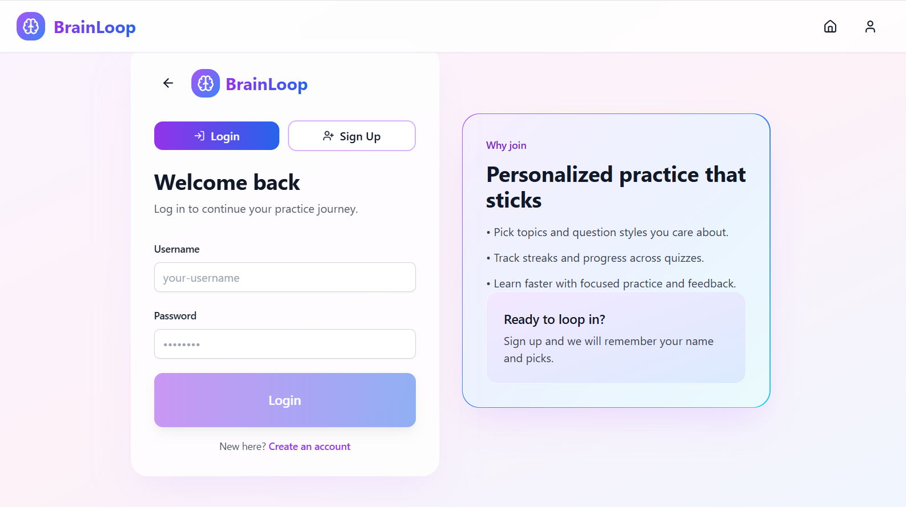
Login tab
/home).Sign Up tab
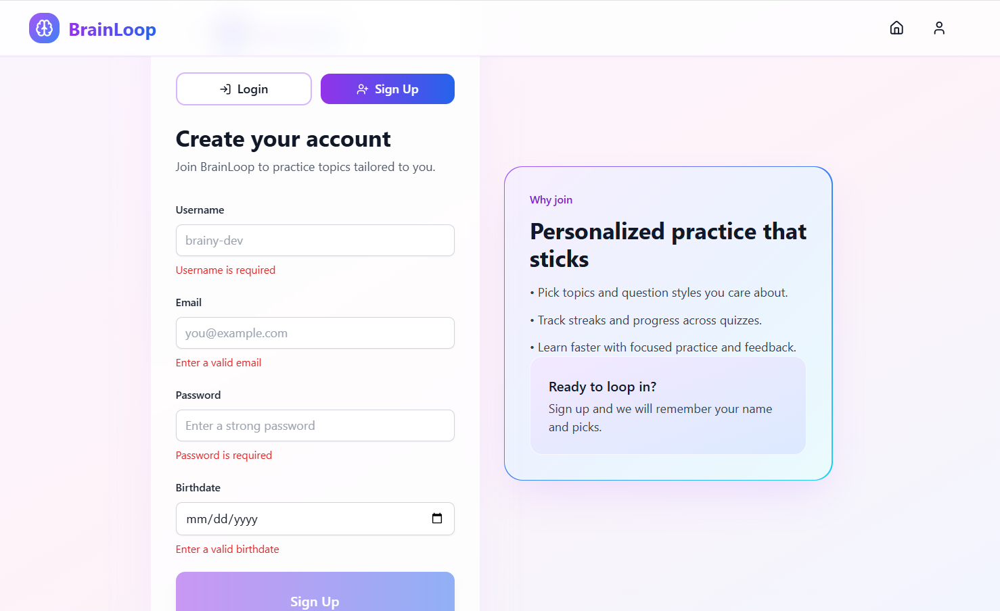
@$!%*?&#).The header appears on all pages except where explicitly hidden.
Components:
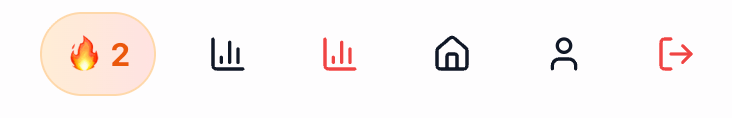
/home./stats (personal analytics)./admin/stats./home./profile./auth./home)When not logged in
/home while not authenticated
redirects you to the Auth page (see Section 3.1).When logged in
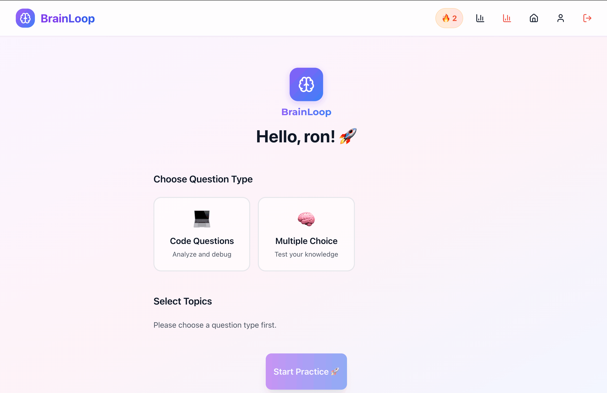
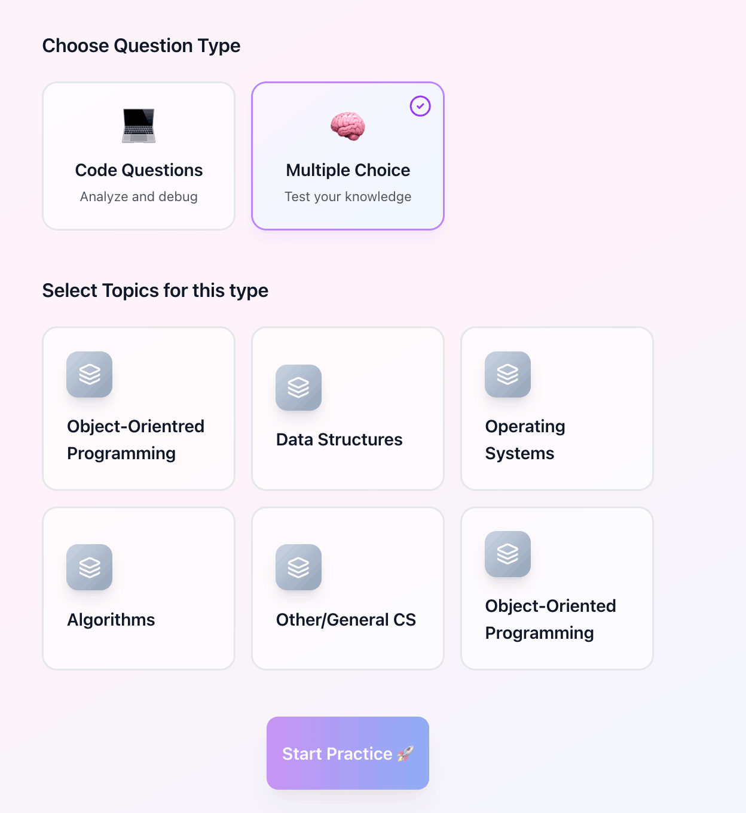
localStorage (topics + question
type)./quiz.Note: In the current version, the learning session is created implicitly when you complete the quiz (via
/complete-session); the previous explicitstart-sessionstep has been simplified.
/quiz)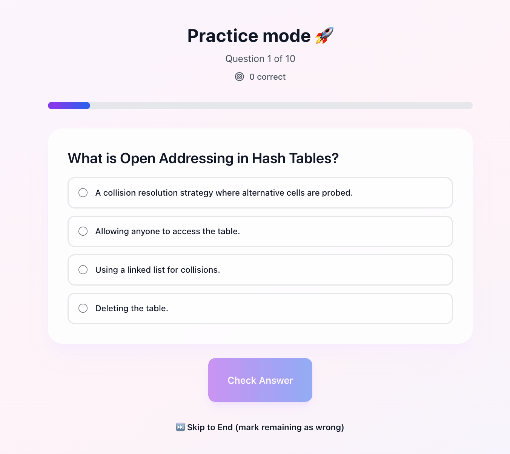
Question types
Answering
/submit.User_Answers (including correctness).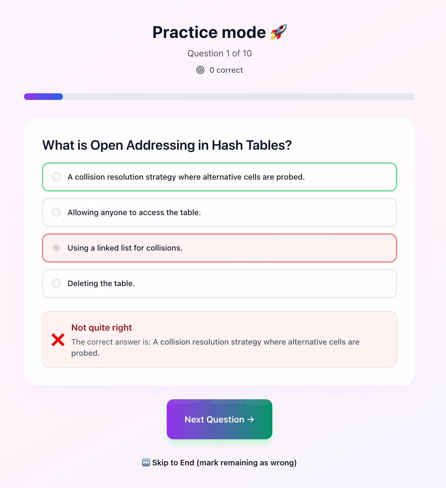
Skip to End (shortcut)
/complete-session.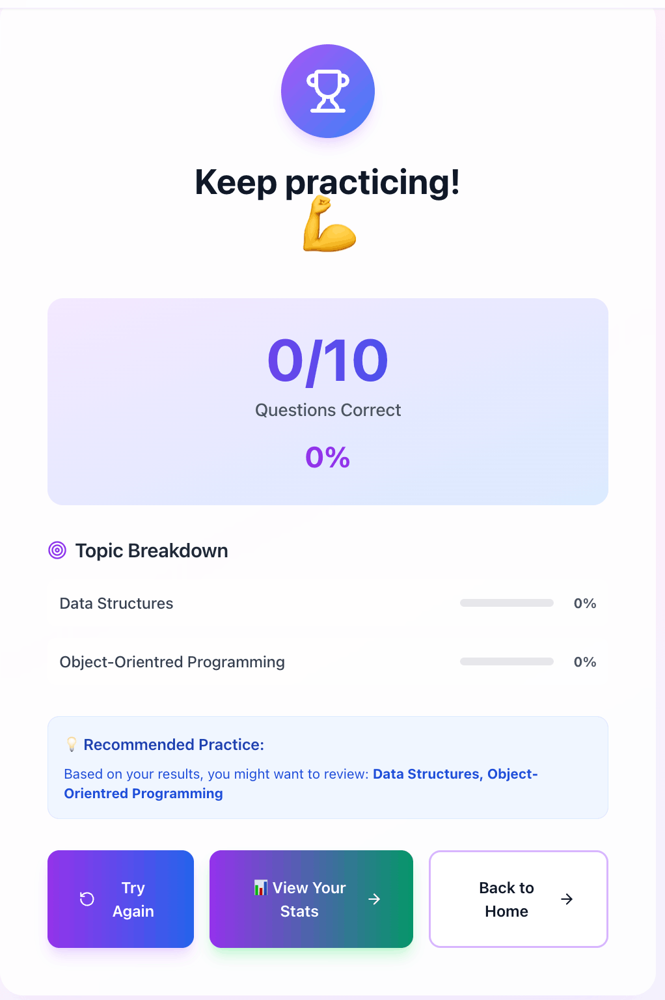
After finishing the quiz (or skipping to the end), the Results component shows:
correct / total and an overall percentage.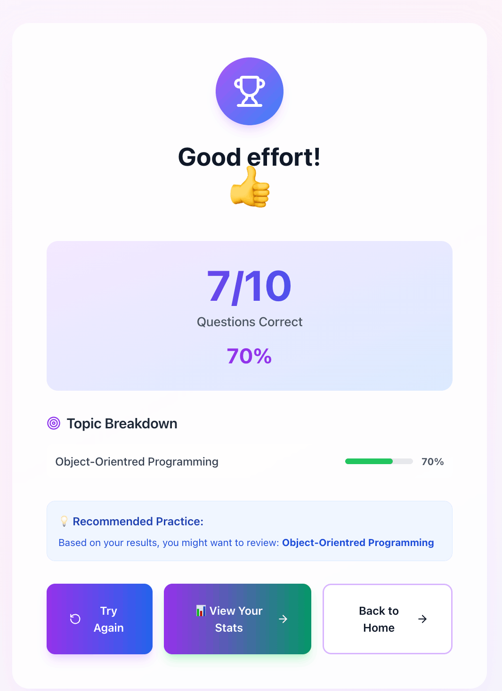
- Message & Emoji - Encouraging message depending on performance. - Topic Breakdown - Each topic with: - Colored bar (green/yellow/red depending on accuracy) - Percentage for that topic. - Recommended Topics - Shows the weakest topics based on this session's performance, so users know what to practice next.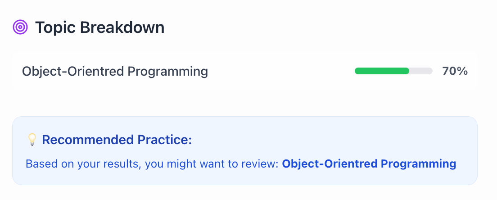
- Actions - Try Again – restart the quiz with new random questions (same type/topics). - Back to Home – return to/home. - View Your
Stats – navigate to the Statistics page
(/stats) to see your long-term analytics.
/profile)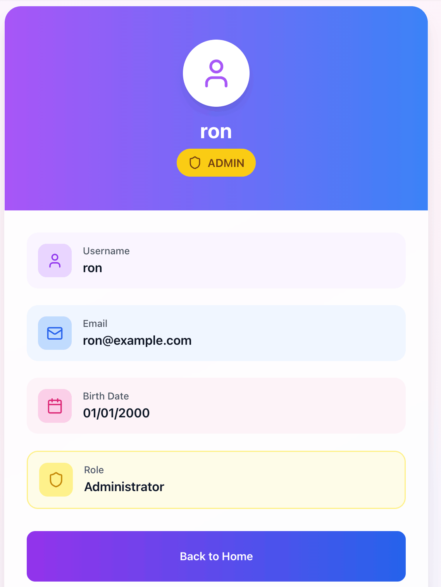
/admin/stats)is_admin = true).BrainLoop uses a MySQL relational database. The
actual schema (from brainloop_db.sql) is:
Users
user_id (PK)username (unique)passwordemailbirth_dateis_admin (0 = student, 1 = admin)Topics
topic_id (PK)name (unique)Questions
q_id (PK)question_texttype (e.g. code,
choose)option_a, option_b, option_c,
option_dcorrect_answertopic_id (FK → Topics.topic_id)User_Answers
answer_id (PK)user_id (FK → Users.user_id)q_id (FK → Questions.q_id)user_answeris_correct (0/1)Learning_Sessions
session_id (PK)user_id (FK → Users.user_id)end_timequestions_solved (number of correct answers)User_Strikes
user_id (PK, FK → Users.user_id)current_streak_dayslongest_streakcurrent_streak_startlast_activity_dateNote: Earlier draft names like
answers,user_tests,scoresdo not exist in the final schema and were removed here to match the actual database.
Questions.topic_id → Topics.topic_idUser_Answers.q_id → Questions.q_idUser_Answers.user_id → Users.user_idLearning_Sessions.user_id →
Users.user_idUser_Strikes.user_id → Users.user_idThis design supports:
The backend uses raw SQL (no ORM). The most complex queries live in
backend/routes/stats.py and implement the statistics
features.
These queries power /stats/user and the
Statistics page.
Overall success rate
User_Answers for the current
user.is_correct = 1.success_rate = 100 * correct / total.SELECT
COUNT(*) AS total_questions,
SUM(CASE WHEN is_correct = 1 THEN 1 ELSE 0 END) AS correct_answers
FROM User_Answers
WHERE user_id = %s;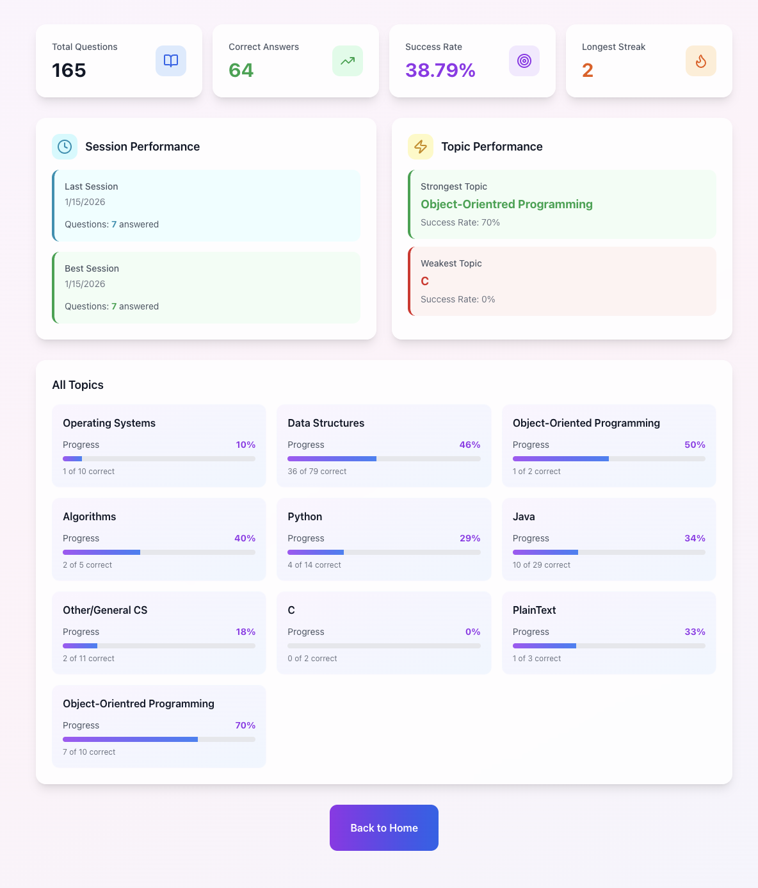
Strongest topic
User_Answers → Questions →
Topics.total attemptscorrect answersaccuracy in percent.accuracy DESC, total DESC.SELECT
t.name,
COUNT(*) AS total,
SUM(CASE WHEN ua.is_correct = 1 THEN 1 ELSE 0 END) AS correct,
ROUND(
CAST(SUM(CASE WHEN ua.is_correct = 1 THEN 1 ELSE 0 END) AS FLOAT)
* 100.0 / COUNT(*),
2
) AS accuracy
FROM User_Answers ua
JOIN Questions q ON ua.q_id = q.q_id
JOIN Topics t ON q.topic_id = t.topic_id
WHERE ua.user_id = %s
GROUP BY t.name
HAVING COUNT(*) > 0
ORDER BY accuracy DESC, COUNT(*) DESC
LIMIT 1;Weakest topic
accuracy ASC, total DESC.SELECT
t.name,
COUNT(*) AS total,
SUM(CASE WHEN ua.is_correct = 1 THEN 1 ELSE 0 END) AS correct,
ROUND(
CAST(SUM(CASE WHEN ua.is_correct = 1 THEN 1 ELSE 0 END) AS FLOAT)
* 100.0 / COUNT(*),
2
) AS accuracy
FROM User_Answers ua
JOIN Questions q ON ua.q_id = q.q_id
JOIN Topics t ON q.topic_id = t.topic_id
WHERE ua.user_id = %s
GROUP BY t.name
HAVING COUNT(*) > 0
ORDER BY accuracy ASC, COUNT(*) DESC
LIMIT 1;Last completed session
Learning_Sessions:
user_id and
end_time IS NOT NULL.session_id DESC.SELECT
session_id,
start_time,
end_time,
questions_solved
FROM Learning_Sessions
WHERE user_id = %s
AND end_time IS NOT NULL
ORDER BY session_id DESC
LIMIT 1;Best session
Learning_Sessions:
user_id, end_time IS NOT NULL,
questions_solved > 0.questions_solved DESC (most questions solved)duration ASC (fastest)session_id DESC (most recent).SELECT
session_id,
start_time,
end_time,
questions_solved
FROM Learning_Sessions
WHERE user_id = %s
AND end_time IS NOT NULL
AND questions_solved > 0
ORDER BY
questions_solved DESC,
(UNIX_TIMESTAMP(end_time) - UNIX_TIMESTAMP(start_time)) ASC,
session_id DESC
LIMIT 1;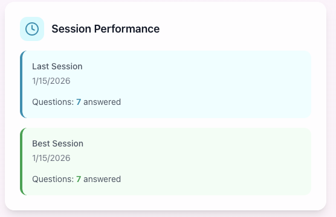
Per-topic breakdown
User_Answers → Questions →
Topics.total, correct, and derived
accuracy.SELECT
t.name AS topic,
COUNT(*) AS total,
SUM(CASE WHEN ua.is_correct = 1 THEN 1 ELSE 0 END) AS correct
FROM User_Answers ua
JOIN Questions q ON ua.q_id = q.q_id
JOIN Topics t ON q.topic_id = t.topic_id
WHERE ua.user_id = %s
GROUP BY t.name;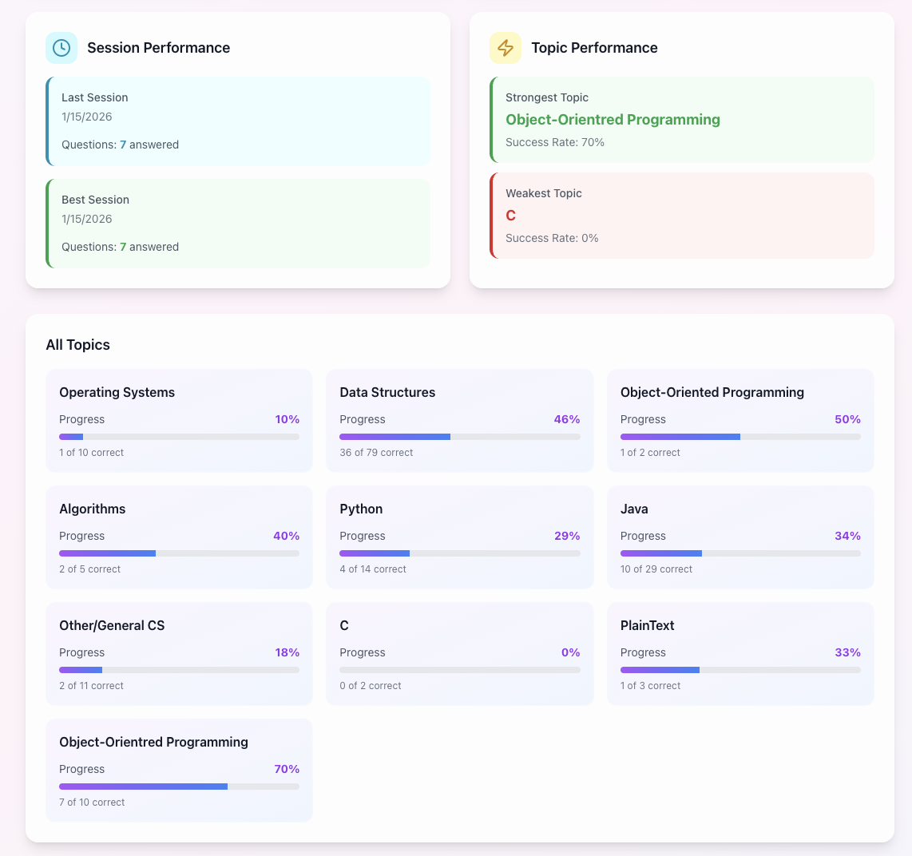
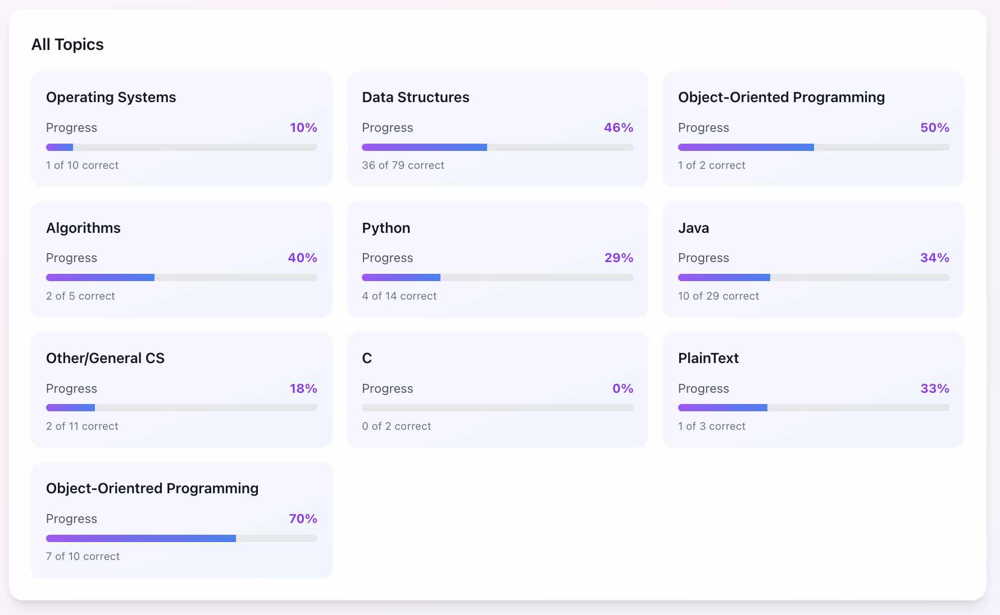
These queries power /admin/stats/overview and the
Admin Insights page.
Top performing students
Users LEFT JOIN User_Answers.total_questions, correct_answers,
success_rate.success_rate DESC.SELECT
u.user_id,
u.username,
COUNT(ua.answer_id) AS total_questions,
SUM(CASE WHEN ua.is_correct = 1 THEN 1 ELSE 0 END) AS correct_answers,
ROUND(
CAST(SUM(CASE WHEN ua.is_correct = 1 THEN 1 ELSE 0 END) AS FLOAT)
* 100.0 / COUNT(ua.answer_id),
2
) AS success_rate
FROM Users u
LEFT JOIN User_Answers ua ON u.user_id = ua.user_id
GROUP BY u.user_id, u.username
HAVING COUNT(ua.answer_id) > 0
ORDER BY success_rate DESC
LIMIT 10;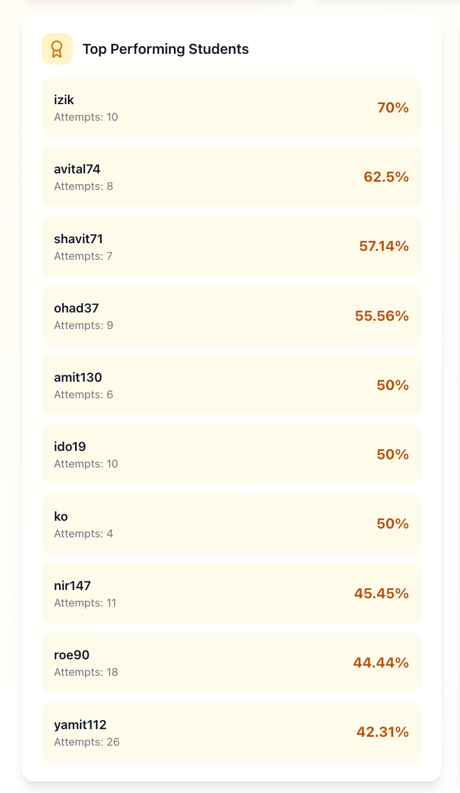
Most practiced topics
User_Answers JOIN Questions LEFT JOIN
Topics.answer_count per topic.answer_count DESC.SELECT
COALESCE(t.name, 'Unknown') AS topic_name,
COUNT(ua.answer_id) AS answer_count
FROM User_Answers ua
JOIN Questions q ON ua.q_id = q.q_id
LEFT JOIN Topics t ON q.topic_id = t.topic_id
GROUP BY t.name
ORDER BY answer_count DESC
LIMIT 5;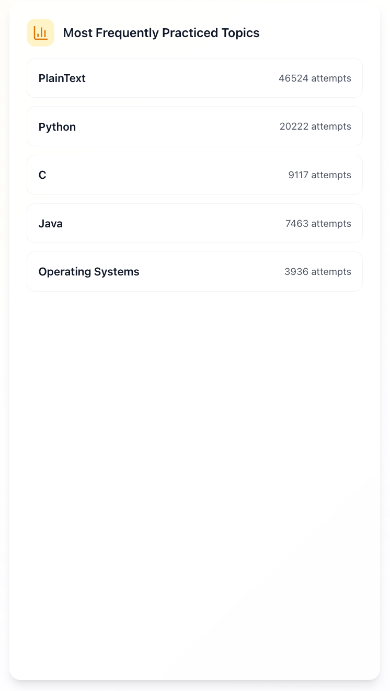
Most challenging topics
totalcorrectsuccess_rate = correct / total * 100.HAVING COUNT(...) >= 3) to reduce noise.success_rate ASC.SELECT
COALESCE(t.name, 'Unknown') AS topic_name,
COUNT(ua.answer_id) AS total,
SUM(CASE WHEN ua.is_correct = 1 THEN 1 ELSE 0 END) AS correct,
ROUND(
CAST(SUM(CASE WHEN ua.is_correct = 1 THEN 1 ELSE 0 END) AS FLOAT)
* 100.0 / COUNT(ua.answer_id),
2
) AS success_rate
FROM User_Answers ua
JOIN Questions q ON ua.q_id = q.q_id
LEFT JOIN Topics t ON q.topic_id = t.topic_id
GROUP BY t.name
HAVING COUNT(ua.answer_id) >= 3
ORDER BY success_rate ASC
LIMIT 5;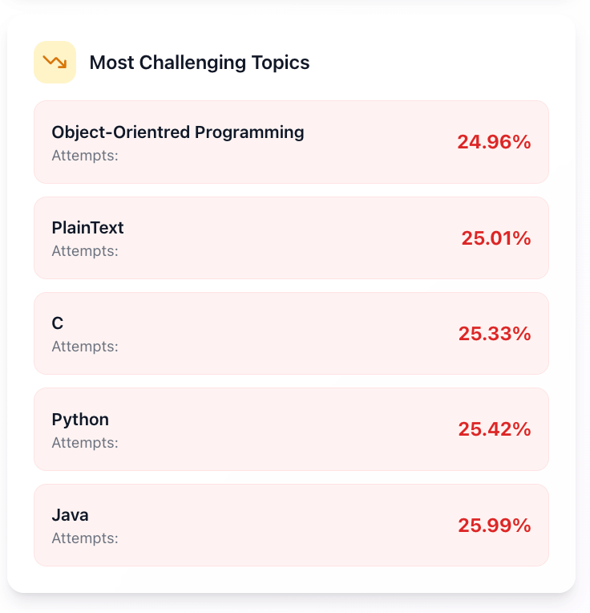
Topics with highest proficiency
success_rate DESC.SELECT
COALESCE(t.name, 'Unknown') AS topic_name,
COUNT(ua.answer_id) AS total,
SUM(CASE WHEN ua.is_correct = 1 THEN 1 ELSE 0 END) AS correct,
ROUND(
CAST(SUM(CASE WHEN ua.is_correct = 1 THEN 1 ELSE 0 END) AS FLOAT)
* 100.0 / COUNT(ua.answer_id),
2
) AS success_rate
FROM User_Answers ua
JOIN Questions q ON ua.q_id = q.q_id
LEFT JOIN Topics t ON q.topic_id = t.topic_id
GROUP BY t.name
HAVING COUNT(ua.answer_id) >= 3
ORDER BY success_rate DESC
LIMIT 5;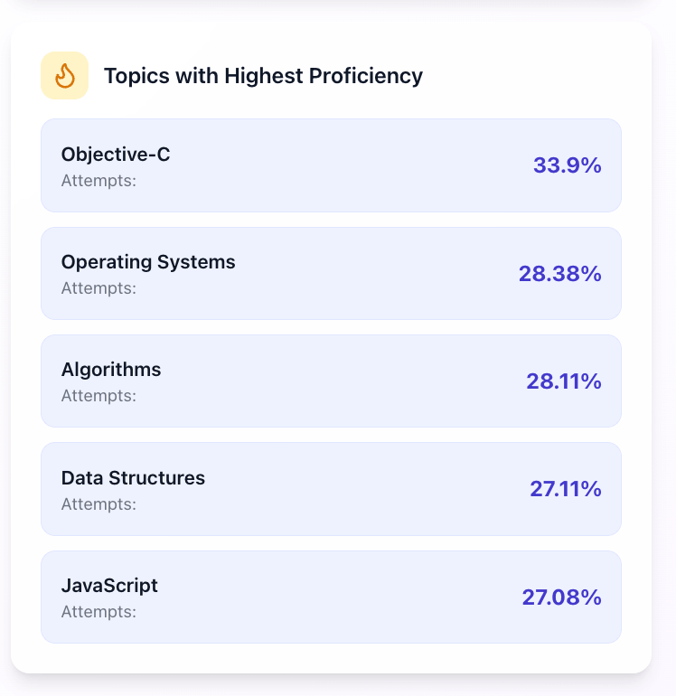
Average session duration
Learning_Sessions where
end_time IS NOT NULL:
AVG((end_time - start_time) / 60) (in
minutes).SELECT
AVG(
(UNIX_TIMESTAMP(end_time) - UNIX_TIMESTAMP(start_time)) / 60.0
) AS avg_minutes
FROM Learning_Sessions
WHERE end_time IS NOT NULL;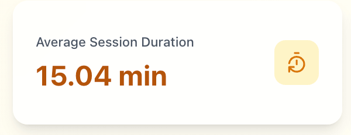
Strongest/weakest topic overall
success_rate per topic using answers
across all users.– Strongest overall topic
SELECT
COALESCE(t.name, 'Unknown') AS topic_name,
ROUND(
CAST(SUM(CASE WHEN ua.is_correct = 1 THEN 1 ELSE 0 END) AS FLOAT)
* 100.0 / COUNT(ua.answer_id),
2
) AS success_rate
FROM User_Answers ua
JOIN Questions q ON ua.q_id = q.q_id
LEFT JOIN Topics t ON q.topic_id = t.topic_id
GROUP BY t.name
HAVING COUNT(ua.answer_id) > 0
ORDER BY success_rate DESC
LIMIT 1;– Weakest overall topic
SELECT
COALESCE(t.name, 'Unknown') AS topic_name,
ROUND(
CAST(SUM(CASE WHEN ua.is_correct = 1 THEN 1 ELSE 0 END) AS FLOAT)
* 100.0 / COUNT(ua.answer_id),
2
) AS success_rate
FROM User_Answers ua
JOIN Questions q ON ua.q_id = q.q_id
LEFT JOIN Topics t ON q.topic_id = t.topic_id
GROUP BY t.name
HAVING COUNT(ua.answer_id) > 0
ORDER BY success_rate ASC
LIMIT 1;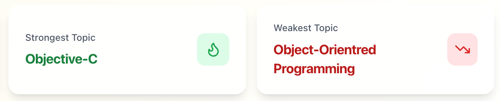
Streak leaders & best overall session
User_Strikes:
longest_streak.current_streak_days.Learning_Sessions + Users:
questions_solved and shortest
duration.– Longest streak of all time
SELECT
u.user_id,
u.username,
us.longest_streak
FROM Users u
JOIN User_Strikes us ON u.user_id = us.user_id
WHERE us.longest_streak > 0
ORDER BY us.longest_streak DESC
LIMIT 1;– Current longest streak
SELECT
u.user_id,
u.username,
us.current_streak_days
FROM Users u
JOIN User_Strikes us ON u.user_id = us.user_id
WHERE us.current_streak_days > 0
ORDER BY us.current_streak_days DESC
LIMIT 1;– Best session overall
SELECT
ls.session_id,
u.username,
ls.start_time,
ls.end_time,
ls.questions_solved,
u.user_id,
ROUND(
(UNIX_TIMESTAMP(ls.end_time) - UNIX_TIMESTAMP(ls.start_time)) / 60.0,
2
) AS duration_minutes
FROM Learning_Sessions ls
JOIN Users u ON ls.user_id = u.user_id
WHERE ls.end_time IS NOT NULL
AND ls.questions_solved > 0
ORDER BY
ls.questions_solved DESC,
(UNIX_TIMESTAMP(ls.end_time) - UNIX_TIMESTAMP(ls.start_time)) ASC
LIMIT 1;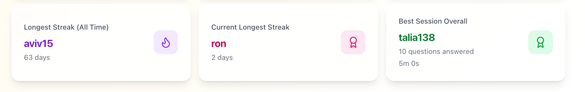
Used for building quizzes.
Builds a dynamic IN ( ... ) list with
placeholders.
E.g.:
SELECT * FROM Questions
WHERE type = ?
AND topic_id IN (?, ?, ...)
ORDER BY RAND()
LIMIT ?Selects by type only:
SELECT * FROM Questions
WHERE type = ?
ORDER BY RAND()
LIMIT ?This ensures each quiz is random but respects the filters chosen on the Home page.
/stats)The Statistics page shows a logged-in user a summary of their overall learning performance.
Access
Data refresh
Overall performance
correct / total * 100
(rounded).User_Strikes).Sessions
questions_solved, breaking ties by
shortest duration.Topic performance
User_Answers).Navigation
/admin/stats)The Admin Insights page shows system-wide analytics, based on all users' activity.
Access
is_admin = true)./home.Summary metrics
longest_streak and number of
days.Leaderboards & topic lists
Navigation
Note
This manual reflects the actual behavior and schema of the current BrainLoop project and can be used as the official User & Admin Manual.